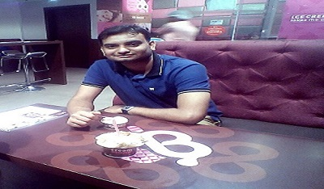

Hi This Rushikesh Kulkarni a Computer Science Engineer currently Working as Java Developer in big MNC from November 2016 .I love coding and web surfing.I am good with java,html,css,javascript,angular js,JQuery,node.js.My hobbies are watching movies and listening songs. I am always passionate about learning new tecnology and improving my technical skills.
I am good with java and mysql since currently working on it.But I am now mastering html,css,JS,Angular JS,JQuery,Node.JS and Mongo Db.I want to become a good full stack web developer who can solve real life problems by applying logics.I am always passionate about learning new technologies.Beside this I am having knowledge of Pentaho Reporting Tool.
Currently I am working with Tata Consultancy Services as Java Developer from November 2016.My project name is TCS iON which is a web based ERP product of TCS.As a developer I am having responsibilities to enhance product as per client needs.Currently we are having 200+ customers who are using this product.
Until now I have developed this portfolio website which is fully responsive.In future my aim is to develop good quality websites by utilizing my front end and back end skills.